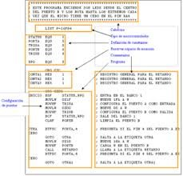

El lenguaje Assembly (Urbina, 2011) (a veces mal llamado "Ensamblador" por su traducción literal al español) es un tipo de lenguaje de bajo nivel utilizado para escribir programas informáticos, y constituye la representación más directa del código máquina específico para cada arquitectura de computadora
Segunda generación de lenguajes
Versión simbólica de los lenguajes máquina (Urbina, 2011) (MOV, ADD).La comunicación en lenguaje de máquina es particular de cada procesador que se usa, y programar en este lenguaje es muy difícil y tedioso, por lo que se empezó a buscar mejores medios de comunicación con ésta. Los lenguajes ensambladores tienen ventajas sobre los lenguajes de máquina.
Este lenguaje fue usado ampliamente en el pasado para el desarrollo de software, pero actualmente sólo se utiliza encontradas ocasiones, especialmente cuando se requiere la manipulación directa del hardware o se pretenden rendimientos inusuales de los equipos
Características:
El programa lee un archivo escrito en lenguaje ensamblador y sustituye cada uno de los códigos mnemotécnicos por su equivalente código máquina. Los programas se hacen fácilmente portables de máquina a máquina y el cálculo de bifurcaciones se hace de manera fácil.

Clasificación:
Ensambladores básicos: Son de muy bajo nivel, y su tarea consiste básicamente, en ofrecer nombres simbólicos a las distintas instrucciones, parámetros y cosas tales como los modos de direccionamiento
Ensambladores modulares, o macro ensambladores: Descendientes de los ensambladores básicos, fueron muy populares en las décadas de los 50 y los 60, fueron antes de la generalización de los lenguajes de alto nivel. Un macroinstrucción es el equivalente a una función en un lenguaje de alto nivel.
Operaciones básicas
(Urbina, 2011) Las operaciones básicas en un lenguaje ensamblador son la suma la resta la multiplicación y la división y Necesitara un poco más de información sobre la arquitectura y SO para el cual programas.
Pero la idea básica es:
--definir que parámetros tendrá la función.
--hacer el programa, propiamente dicho, en assembler.
Siguiendo la convención de pasaje de parámetros, manejará registros y posiciones de memoria, devolviendo los resultados en donde deba (una posición de memoria, el registro eax, etc.).